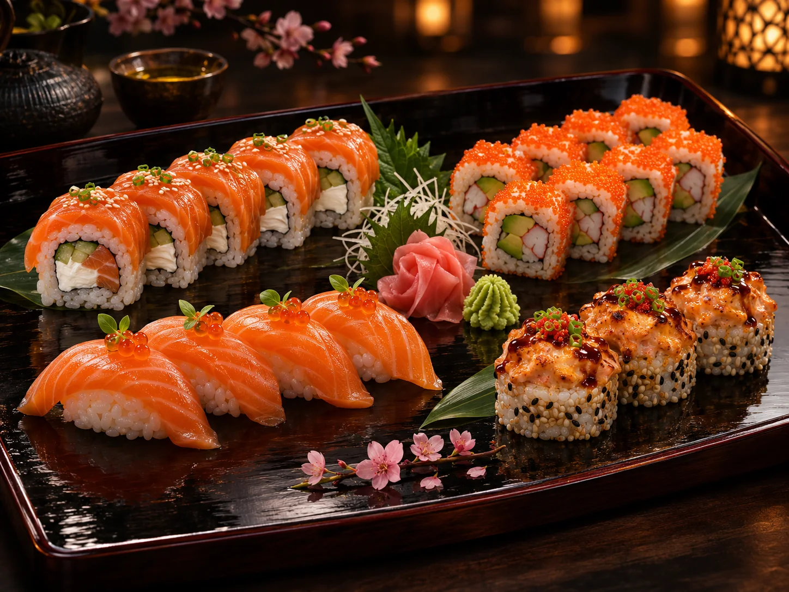

Ерлан2026-02-07
Сервис★★★★☆
Заказывали донбури с угрём и гёдза. Всё приехало тёплым, рис сохранил текстуру, а соус был отдельно — это удобно.
Демо-история · не реальный отзыв
Вкус, сервис и атмосфера
Все истории на этой странице придуманы для демонстрации. Оставленный отзыв сохраняется в учебной базе и не становится публичной оценкой.
Оставить отзывЗаказывали донбури с угрём и гёдза. Всё приехало тёплым, рис сохранил текстуру, а соус был отдельно — это удобно.
Демо-история · не реальный отзыв
Очень красивый зал и внимательная подача. Матча-тирамису оказался нежным, не приторным. Вернусь за омакасе.
Демо-история · не реальный отзыв
Брали сет «Ханами» на двоих. Понравилось, что у роллов разные текстуры и вкус не перегружен соусами. Отдельная радость — чай в конце вечера.
Демо-история · не реальный отзыв
Нигири подали при нужной температуре, а юдзу в тартаре звучал очень тонко. Ужин запомнился именно деталями.
Демо-история · не реальный отзывИспользуйте вымышленные данные. Отзыв сохраняется в базе со статусом проверки и не меняет публичный рейтинг.